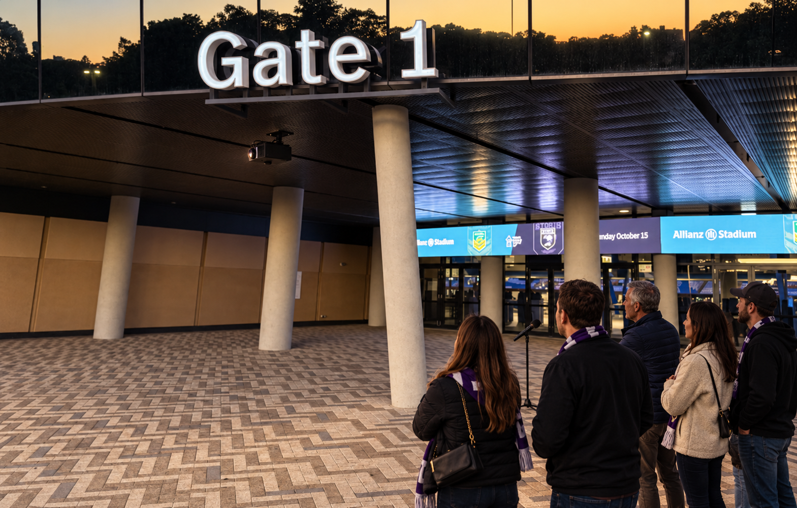

Keep the Horses Safe
Moore Park / Allianz Stadium Gate 1
Passive
Individual
Group
Microphone · next stage
Close-up
Full screen

48
Estimated dB*
01 Calm
Thank you. Keep it calm.
STATIC SCENE REVIEW
Group · sound not connected
The horse reacts to sound around you.